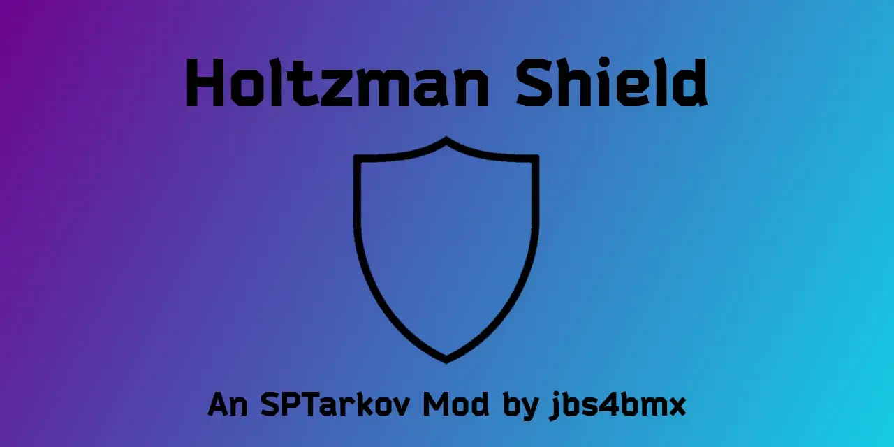

Mod
Holtzman Shield
- Downloads
- 1,715
- Favourites
- 3
- Mod lists
- 4

About This Mod
Extra armor for all of your body parts based loosely on the technology from the novel Dune!
This mod adds a custom armband that has all of the properties of armor and has configurable options so you can customize it to your liking.
Details
- Customizable armor zones, price, durability, and more…
- Raise or lower the durability.
- Set which armor zones (armor colliders) you want to protect.
- Increase or decrease blindness protection.
- Change loyalty level requirement.
- Raise or lower the price.
- Raise or lower the repair cost.
- Raise or lower the flea market price.
- Edit the item look using the “PreFab” option.
Derived Work
- Below are examples of mods that implemented a custom armor item using the armband (active development of each item may be discontinued by the associated author):
| NAME | Author | Notes |
|---|---|---|
| Holtzman Shield | jbs4bmx | The original modified armband. |
| Body Blessings | ShadowXtrex | Includes custom armbands. |
| Single Player Overhaul | (SPO)gabe_over | Modified version Holtzman Shield. |
| Limb Armor | Rhyufer / Felyx | Modified versions of armbands. |
Pro/Con List
- PRO - Additional armor without the weight constraints or debuffs to movement.
- PRO - You can survive some of the scariest fire fights of your life with this armor fully configured to protect all areas.
- CON - Does not protect against grenade (both thrown and launched), land mine, or claymore explosives.
- CON - Does not protect against fall damage.
- CON - This gets the lowest priority when wearing other armors or helmets. In the event that you are wearing other armors or helmets, damage will occur to your PMC when attacked.
Incompatibilities
- SPT Realism Mod by Fontaine
- FIKA - No; I will not be adding it in the future.
Configuration
- Holtzman Shield configuration file contents (config.jsonc)
{
// Holtzman Shield Configuration File
// __Armor Coverage Settings_________________________________________________________________________________________
// The following values must be set to either true or false. You may set more than one of these to true.
// Default Value (Enabled): true (for all coverage areas)
// ------------------------------------------------------------------------------------------------------------------
"Head": true,
"Neck": true,
"Eyes": true,
"Ears": true,
"Jaw": true,
"Arms": true,
"Front": true,
"Back": true,
"Sides": true,
"Pelvis": true,
"Buttocks": true,
"Legs": true,
// __Item Properties_________________________________________________________________________________________________
// Durability must be a whole number ranging from 1-9999999. (Default Value: 100000)
// BlindnessProtection must be any number value between 0.0 and 1.0 (0.0 = 0%, 1.0 = 100%)
// RepairCost must be a whole number ranging from 1-2000. Keep this value below 200 to avoid high costs.
// ------------------------------------------------------------------------------------------------------------------
"Durability": 100000,
"BlindnessProtection": 1.0,
"RepairCost": 35,
"TraderPrice": 69420,
"FleaPrice": 76767,
"TraderLoyaltyLevel": 1,
// __PreFab Skins____________________________________________________________________________________________________
// Set only ONE of the following values to 'true' to apply the desired armband skin to Holtzman Shield.
// BlackDivision, EODOwners, Discord, and Prayer are not yet part of the game. (WIP - Ignore for now.)
// Default Value (Evasion): true
// ------------------------------------------------------------------------------------------------------------------
"PreFab": {
"Evasion": true,
"Alpha": false,
"DeadSkul": false,
"TrainHard": false,
"TwitchRivals": false,
"Bear": false,
"Kiba": false,
"Labs": false,
"RFArmy": false,
"TerraGroup": false,
"Untar": false,
"USEC": false,
"Blue": false,
"Green": false,
"Red": false,
"White": false,
"Yellow": false,
"Unheard": false,
"Arena": false,
"XMas": false,
"Prestige1": false,
"Prestige2": false,
"Prestige3": false,
"Prestige4": false,
"Prestige5": false,
// Please ignore the following WIP skins for now.
"BlackDivision_wip": false,
"EODOwners_wip": false,
"Discord_wip": false,
"Prayer_wip": false
},
// __Advanced Options________________________________________________________________________________________________
// BluntForce will help to limit all blunt force damage from projectiles when set to true.
// This option still requires a client-side mod for no over damage to be taken by the player.
// Penetration damage still applies as normal unless you use a client-side mod. It cannot be done via a server-side
// mod alone due to how the game is coded.
// Default Value (Enabled): true
// ------------------------------------------------------------------------------------------------------------------
"BluntForce": true,
// __Item Blacklist Settings_________________________________________________________________________________________
// Set to 'true' to disable item spawning on PMC bots, or to remove from global loot pools.
// Default Value (Enabled): false
// ------------------------------------------------------------------------------------------------------------------
"PMC": false,
"GlobalLoot": false
}
The options shown below are available for ArmbandCore (F12 Menu).

Notes
- Enabling ‘blunt force removal’ and ‘throughput removal’ at the same time basically makes you invincible to firearms.
- Enabling ‘blunt force removal’, ‘throughput removal’, ‘explosive redirection’, and ‘fragmentation redirection’ at the same time basically makes you invincible to both firearms and explosives. (Concussion still takes affect.)
- Redirecting explosive damage to armband armor requires that “Enable Protection From Explosive” is set to True.
- Multi-layer armor damage resolution will split all armor damage between the armor you’re wearing and an armored armband if you are wearing one. The split is 50/50.
- Debugging options are for mod developers and not intended to be used during gameplay unless troubleshooting an active issue.
- A pseudo “God mode” can be achieved by wearing an armored armband and enabling all options under “EXPERIMENTAL OPTIONS (ARMBAND ARMOR)”.
Install
- Extract the contents of the zip file to the “root” of your SPT folder.
- The same location as ‘EscapeFromTarkov.exe’.
- Edit the configuration file to your desired state.
Uninstall
- Step 1: Remove any and all HoltzmanShield items from your inventory.
- Step 2: Exit the game. Before logging out, Clean your temp files via the Launcher.
- Step 3: Delete ‘HoltzmanShield’ folder from the “[SPT_Install]/SPT/user/mods” folder.
Support
Mod Source
Author’s Notes
- Compatibility with other mods is neither expressed nor implied. (Attempts will be made to correct this, but cannot be guaranteed.)
- Support is neither expressed nor implied. (There is no guarantee of expedited or resultant service.)
- Support is definitely NOT given to earlier versions of the mod.
Issues
- If you would like to report an issue, please keep the report short and concise.
- Reporting of issues is okay.
- Reporting on mod incompatibility is okay.
- Complaining about how the mod functions, whether good or bad, is NOT okay.
- Be civil or you will be ignored.
Credits
- Thank you to the following for their assistance in helping to develop or improve this mod:
- ShadowXtrex
- sugonyak
Buy Me a Coffee
-
- This is definitely not required and you have every right to ignore this tab, but if you would still like to buy me a coffee, I’d greatly appreciate it. Any and all proceeds will go towards further development/maintenance of mods.
Version
4.0.2
SPT ~4.0.0
Fika: incompatible
259 downloads22.6 KB
Optimizations
- [✅] Minor optimizations to classes and functions. Nothing too notable.
- [✅] Fixed interoperability of HS with Helmets and other headwear.
Restructuring
- [✅] No changes to code structure.
Additions
- [🚧] Add new armbands.
Testing
- Verified functionality in the following metrics.
- [✅] Protects against enemy fire.
- [✅] Some protection against explosions.
- [🚧] Interoperability with other armors.
Key:
- [✅] = Task fully completed.
- [❌] = Task canceled or not completed.
- [🚧] = Task pending review or completion.
- MD5: be876817115984907ea59eb1f186ff83
- SHA-1: 25d6a40c22447f7dd8924a31f61a25a771856d3b
- SHA-256: 230b892f7f161e76c5c44aabb88ac30baa80630fa1744f3814e4968cb03cdb53
- Vhash: a39388641257317dff33a8e5b787bb04
- SSDEEP: 384:VmSXJRvyfAEroWwTwEazO2pyL8kqG0aBL/Fbxg:fNcGwEazO2q3fL/Fbxg
- TLSH: T1D262C06C9BBB468DE8A38777306A2008CB1C130566D0C1E9DF3C0B83B1E596A763CBD5
- File type: ZIP
- File size: 14.93 KB (15291 bytes)
VirusTotal: report 1
Version
4.0.1
SPT ~4.0.0
Fika: incompatible
1,456 downloads24.0 KB
Overview
This update finally brings Holtzman Shield into the SPT 4.0.0+ domain. It has been thoroughly tested alongside ArmbandCore (ABC) and has proven to greatly increase survivability while in-game.
Update - Version support for SPT 4.0.0+ and EFT 0.16.9.0.40087
Update - License, Copyright, and versioning information.
What’s New
- Refactored internal code structure for improved stability and maintainability
- Cleaned up prefab selection logic to ensure consistent skin application
- Streamlined collider generation for more reliable armor coverage
- Improved configuration validation to prevent invalid values
- Simplified trader assort handling for better compatibility with SPT 4.0.0+
- Removed legacy debug logging and unused code paths
- General code cleanup and modernization for .NET 9
No Gameplay Changes
- All gameplay behavior remains identical — this update focuses purely on internal improvements, performance, and future‑proofing
Notes
- Virus Total Results:
VirusTotal: report 1